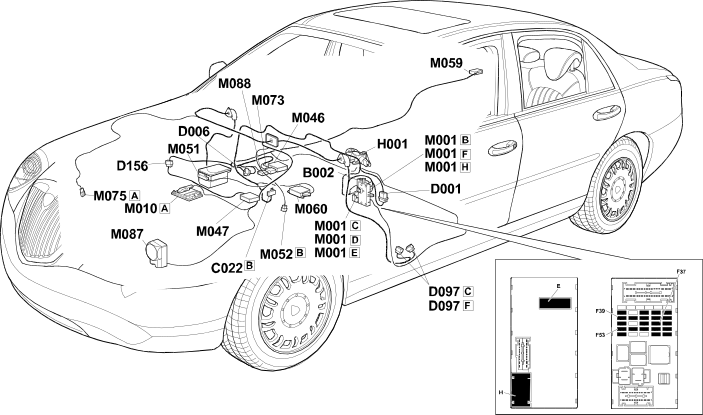

E8010 MULTIPLE DIAGNOSTIC CONNECTOR LOCATION COMPONENTS
- Path
- Electrical equipment > ELECTRICAL FUNCTIONS > E80 DIAGNOSTIC SYSTEMS > E8010 DIAGNOSTIC MULTIPLE CONNECTOR > E8010 MULTIPLE DIAGNOSTIC CONNECTOR LOCATION COMPONENTS
- Kind
- topic
- Applies to
- engines: 3.0 V6, 3.2 V6; all production periods; only with equipment: Automatic Transmission
- Interactive page
- https://sloeber94.github.io/elrnDB-lThss/en/#/841006241
Applies to: engines: 3.0 V6, 3.2 V6; all production periods; only with equipment: Automatic Transmission
Location Components

Components
Component code | Name | Assembly reference |
|---|---|---|
Junction unit under dashboard | - | |
Centre dashboard earth | - | |
- | ||
Front/rear coupling | - | |
Short circuit coupling | - | |
Tyre inflation pressure control unit coupling | - | |
Ignition switch | - | |
Body computer | - | |
Engine management control unit | 1056B | |
- | ||
Tyre inflation pressure control unit | - | |
Braking system control unit (NFR) | - | |
M052 | Centralina check impianto frenante (brake assistence NBA) | - |
Electric brake control unit | - | |
Air Bag control unit | - | |
- | ||
Additional heater control unit | - | |
Cruise control system control unit (NAC) | - | |
Servotronik control unit | 4130C |
Topics linked from this page (18)
- B002 Junction unit under dashboard
- C022 Centre dashboard earth
- D001 Front/dashboard coupling
- D006 Front/rear coupling
- D097 Short circuit coupling
- D156 Tyre inflation pressure control unit coupling
- H001 Ignition switch
- M001 Body computer
- M010 Engine management control unit
- M046 Controlled suspension control unit (SCS)
- M047 Tyre inflation pressure control unit
- M051 Braking system control unit (NFR)
- M059 Electric brake control unit
- M060 Air Bag control unit
- M073 Headlamp alignment control unit (CAF)
- M075 Additional heater control unit
- M087 Cruise control system control unit (NAC)
- M088 Servotronik control unit